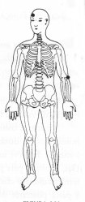

Atitude: desânimo total - Sexta profundidade - Desarmonia do fluxo do Umbigo.
|
Energia da Função do Umbigo.
Toque o centro da mão com os dedos da outra mão. ou
M.e. toque na testa acima da sobrancelha direita TSE 20; ®
M.d. sobre a dobra externa do cotovelo esquerdo na direção do polegar TSE 19. ®
|
 |
Notas:1 - M.d. = mão direita M.e. = mão esquerda.2 - O texto sublinhado indica que pode ser feito usando alternadamente o lado direito (mão direita) e depois o lado esquerdo (mão esquerda). 3 - Tocar a área indicada, com a ponta dos dedos da mão, durante alguns minutos ou até sentir uma pulsação rítmica. Não precisamos nos preocupar em demasia com a precisão da área indicada, pois cada trava de segurança da energia tem uma abragência de uns sete centímetros em torno de si.